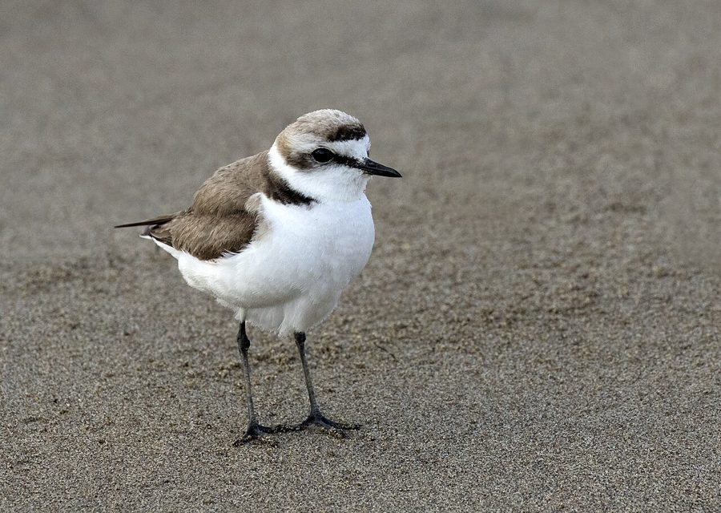

केंटिश प्लोवरKentish Plover
Charadrius alexandrinus · Charadriidae · BRD-0134

- Scientific name वैज्ञानिक नाम
- Charadrius alexandrinus Linnaeus, 1758
- Family कुल
- Charadriidae
- Hindi हिंदी
- केंटिश प्लोवर
- Local names स्थानीय नाम
- kentish plover, kentish, plover, kentis plover
- Status here यहाँ की स्थिति
- native
- Movement आवागमन
- Winter visitor
- IUCN IUCN
- LC
- Review समीक्षा
- audited and independently read
When to look कब देखें
Winter visitor शीतकालीन प्रवासी. Expected mainly in October, November, December, January, February, March, April, May. मुख्यतः अक्टूबर, नवंबर, दिसंबर, जनवरी, फ़रवरी, मार्च, अप्रैल, मई में अपेक्षित।
Arrives in October–November from breeding grounds in Central Asia and southern Europe; departs by April–May. Expected on mudflats, sandy banks, and embankments of rivers and tanks across eastern UP. Documented in Ayodhya wetlands surveys. All migrants and visitors →
Tell it apart from इनसे अलग पहचानें
केंटिश प्लोवर / Kentish Plover
Charadrius alexandrinus Linnaeus, 1758 — Charadriidae
केंटिश प्लोवर — यूरोप और मध्य एशिया से सर्दियों में आने वाली एक छोटी और हल्के रंग की चिड़िया। इसके कंधे पर भूरे रंग का धब्बा और सिर पर काली लकीर इसे पहचान देती है। पूर्वी उत्तर प्रदेश में यह अक्टूबर से मई तक नदियों और तालाबों के रेत और कीचड़ के किनारों पर दिखाई देती है, और जल्दी दौड़ते हुए भोजन खोजती है।
Quick Identification त्वरित पहचान
| Feature | Description |
|---|---|
| Size | Small plover; 15–17 cm long |
| Build | Compact, upright posture; rounded head |
| Plumage | Pale greyish-brown above; white underparts |
| Head | Black lore and ear-covert patch; white forehead and supercilium |
| Legs | Long, orange-red or yellow; slender |
| Bill | Short, fine, black; straight |
| Shoulder | Rufous-buff patch (male) |
| Behaviour | Runs in short bursts; solitary or small groups |
Field tip: A small, pale plover with orange-red legs and a black lore patch. Unlike Little Ringed Plover, it lacks the white eye-ring and shows a distinctive head pattern with white supercilium and black ear-covert patch. Runs in jerky, hesitant movements typical of plovers.
हिंदी — कैसे पहचानें:
छोटी चिड़िया; हल्के रंग की।
काली आँख की लकीर; सफेद माथा।
लाल-पीली लंबी टाँगें।
तेजी से दौड़ता है।
Morphology आकारिकी
Biometrics:
| Measurement | Range |
|---|---|
| Total length | 150–170 mm |
| Wing | 105–120 mm |
| Tail | 50–60 mm |
| Bill | 11–13 mm |
| Tarsus | 20–25 mm |
| Weight | 28–42 g |
Size: 15–17 cm long; wingspan 35–39 cm.
Plumage: Pale greyish-brown or sandy above. Crown and nape buffish-grey. Forehead white. Black lore (between eye and bill) and ear-covert patch distinctive. White supercilium. Underparts white. Breast and upper flanks sometimes washed with buff. Rump and tail dark.
Males: Show rufous-buff patch on shoulder (absent in females).
Bill: Short, fine, and straight; black; adapted for pecking small insects.
Legs and feet: Long for a plover, orange-red or yellow in breeding birds, duller in winter; slender and delicate.
Sexes: Males more colourful than females; females duller overall.
Vocalisations. Call repertoire:
- Call: A soft prrit or chi-wit, given in flight and at rest.
- Alarm call: A sharper chi-chi when disturbed.
- Song: A brief, whistled melody (rarely heard outside breeding season).
हिंदी: कोमल प्रिट जैसी आवाज़। डर पर चि-चि चिल्लाहट।
Behaviour & Ecology व्यवहार और पारिस्थितिकी
Surface-pecker: Kentish Plovers feed by running and pecking on sandy and muddy surfaces, often stopping suddenly. They feed on:
- Small insects (beetles, flies, grasshoppers)
- Crustaceans and amphipods
- Small worms
- Seeds and plant fragments
Social behaviour: Usually solitary or in pairs during winter; loose flocks may form on suitable habitats. Males territorial during breeding season.
Feeding time: Active throughout the day; crepuscular activity peaks at dawn and dusk.
Roost behaviour: Roosts on open sandy banks or mudflats; less nocturnal than ducks.
Predators: Marsh Harrier, Peregrine Falcon, hooded crows, and jackals may take adults.
Habitat preference: Prefer open, sandy or muddy habitats with sparse vegetation; salt pans and alkaline flats when available.
हिंदी: अकेले या जोड़ों में देखते हैं। रेतीले किनारों पर दौड़ते हुए भोजन खोजते हैं। दिन भर सक्रिय।
Life Cycle / Phenology जीवन चक्र
Winter visitor: Breeds across Europe, North Africa, and Central Asia (April–July); absent during breeding season. Returns to eastern UP from October and remains through May.
Arrival and departure: First birds arrive in October; numbers peak in January–February; most depart by April–May.
Courtship: Takes place on breeding grounds. Males perform display flights and calls.
Moult: Complete moult occurs twice yearly. Non-breeding plumage acquired before migration.
Site fidelity: Many individuals return to the same wintering sites year after year, particularly males.
हिंदी: अक्टूबर में आता है, मई तक रहता है। यूरोप और मध्य एशिया में प्रजनन करता है। सर्दियों में एक ही जगह रहता है।
Host Plants or Prey आहार
| Food Type | Examples | Feeding Behaviour |
|---|---|---|
| Insects | Beetles, flies, grasshoppers | Pecked from surface while running |
| Crustaceans | Amphipods, small crabs | Picked from wet sand and mud |
| Small worms | Oligochaetes, nemerteans | Pecked from surface |
| Seeds | Grass and sedge seeds | Picked from dry sand |
| Molluscs | Small snails | Pecked and broken open |
हिंदी: छोटे कीड़े और केकड़े खाता है। रेत में चोंच मारकर भोजन निकालता है।
Predators / Natural Enemies शत्रु
- Avian predators: Marsh Harrier, Peregrine Falcon, hooded crow, Black-headed Gull
- Mammalian predators: Jackal, wild boar, mongoose
- Parasites: Feather mites, helminths
हिंदी: शिकारी चिड़ियाँ और छोटे जानवर इसका शिकार करते हैं।
Agricultural / Human Relevance कृषि प्रासंगिकता
Protected species: The Kentish Plover is protected under the Wildlife (Protection) Act 1972 (Schedule IV, amended 2022). Hunting is illegal in India.
Wetland and bare-ground indicator: As a specialist feeder on open sandy and muddy habitats, it indicates the presence of suitable, undisturbed wetland margins and embankments.
Habitat modification: Development of tank embankments and loss of bare-ground areas can reduce suitable habitat.
Historical records: Not mentioned in Mughal hunting records; too small and delicate to be of sporting interest.
Cultural value: Recognized by birdwatchers as a charismatic and delicate winter visitor.
हिंदी: कानून से पूरी तरह सुरक्षित है। इसका शिकार करना कानूनी रूप से निषिद्ध है।
Expected Locally स्थानीय रूप से अपेक्षित
Not a field record. Written from published accounts for eastern Uttar Pradesh. No confirmed local sighting yet — if you have seen it, that is what the atlas needs.
अभी तक स्थानीय पुष्टि नहीं। यह विवरण प्रकाशित स्रोतों से है, किसी अवलोकन से नहीं।
Winter range: Expected in eastern Uttar Pradesh from October to May on sandy and muddy banks of rivers and tanks. Documented in Ayodhya wetlands surveys (Yashmita-Ulman & Singh, 2022).
Habitat preference: Open sandy or muddy banks, tank embankments, and bare-ground areas near water. Less dependent on vegetation than other plovers.
Peak occurrence: January–February, when populations from Central Asian and southern European breeding grounds have moved south.
Nearest published record: Recorded in Ayodhya District wetlands by Yashmita-Ulman & Singh (2022) as a winter visitor.
What a first record would be: A dated photograph showing the bird clearly on a sandy or muddy bank in a specific location (with GPS coordinates and date) submitted through the About page of this atlas. The pale plumage, orange-red legs, and black head markings are diagnostic.
हिंदी: यह पक्षी स्थानीय रूप से अपेक्षित है, न कि देखे गए बतौर प्रेक्षण। अक्टूबर से मई तक नदी और तालाब के किनारे देखे जा सकते हैं। पहला रिकॉर्ड के लिए स्पष्ट फोटोग्राफ चाहिए।
Distribution वितरण
Global range: Widespread breeding across Europe, North Africa, and Central Asia. Polytypic with several subspecies. Wintering grounds extend across Africa, Mediterranean, and Asia.
In India: Distributed as a winter visitor across the subcontinent on suitable wetlands.
In Uttar Pradesh: Winter visitor to river systems and lakes, particularly in the eastern districts.
In Basti district / eastern UP: Regular winter visitor to river and tank margins, documented in Ayodhya wetlands surveys.
Research Questions शोध प्रश्न
- What are the precise breeding grounds and migratory routes of the Kentish Plover populations that winter in eastern UP?
- क्या इस चिड़िया की सर्दियों की जगहें साल दर साल एक जैसी रहती हैं?
- How does the habitat use of Kentish Plover differ from other plovers in the same wetland?
- What water-level fluctuations and substrate types are preferred for foraging by Kentish Plovers in eastern UP?
- How has the construction of concrete embankments affected the availability of suitable nesting and foraging habitat for Kentish Plovers? (A child can survey embankment types and count plovers at each type.)
- क्या रेत के खनन और बालू के निष्कर्षण से इस चिड़िया के आवास में कमी आई है?
Similar Species मिलती-जुलती प्रजातियाँ
| Species | Key Difference | Hindi | Field Rule |
|---|---|---|---|
| Little Ringed Plover (Charadrius dubius) | Smaller; white eye-ring; yellow legs; smaller size overall | छोटी टिटहरी | Little Ringed Plover has a conspicuous white eye-ring (lacking in Kentish). Kentish has longer, orange-red legs. |
| Common Ringed Plover (Charadrius hiaticula) | Larger; thicker bill; white wing-bar; orange-yellow legs | टिटहरी | Ringed Plover is much larger with a heavier bill and thicker neck. |
Field rule: Kentish Plover is distinguished by its pale coloration, orange-red legs, black lore patch, and white supercilium. The absence of a white eye-ring and relatively long legs separate it from Little Ringed Plover.
Taxonomy & Classification वर्गीकरण
Original description. The species was described by Carl Linnaeus in 1758 in the Systema Naturae (10th edition), as Charadrius alexandrinus. Type locality is the Mediterranean coast.
Subspecies. Polytypic with several subspecies recognized, including C. a. alexandrinus (Mediterranean, Europe) and C. a. seebohmi (Central Asia, recorded in India).
Family and order placement. Order Charadriiformes; family Charadriidae (plovers). The genus Charadrius contains the "true" plovers, many of which are migratory.
Phylogenetic notes. Closely related to other small plovers; molecular studies confirm its position within the genus Charadrius.
IUCN status rationale. The species is assessed as Least Concern (LC) globally. Populations are stable and widely distributed. Adaptable to various wetland habitats and human-modified environments. In India, protected under the Wildlife Protection Act 1972 (Schedule IV).
हिंदी: विश्वभर में पाया जाता है। भारत में सर्दियों में आता है। कानून से सुरक्षित है।
Photo Gallery फोटो गैलरी
No photos yet — add field photos to media/species/kentish_plover/ and run node scripts/sync_photos.js.
Wanted photos:
- Non-breeding plumage on sandy bank
- Running and pecking behaviour
- Head detail showing black lore patch
- With other plovers for comparison
- At roost site on open ground
References संदर्भ
- Linnaeus, C. (1758). Systema Naturae per Regna Tria Naturae (10th edn). Laurentii Salvii, Holmiae. Vol. 1.
- Ali, S. & Ripley, S. D. (1968). Handbook of the Birds of India and Pakistan. Vol. 2 (Waders to Owls). Oxford University Press, Delhi. Pp. 108–110.
- Grimmett, R., Inskipp, C. & Inskipp, T. (2011). Birds of the Indian Subcontinent (2nd edn). Oxford University Press, Delhi. Pp. 127–128.
- Cramp, S. & Simmons, K. E. L. (1983). Handbook of the Birds of Europe, the Middle East and North Africa: The Birds of the Western Palearctic. Vol. 3 (Waders to Gulls). Oxford University Press. Pp. 114–134.
- Yashmita-Ulman & Singh, M. (2022). Avifaunal diversity in unprotected wetlands of Ayodhya District, Uttar Pradesh, India. Journal of Threatened Taxa 14(8): 21561–21578.
- GBIF Occurrence Data — Charadrius alexandrinus, India (2024).
Source file: species/fauna/birds/kentish_plover.md